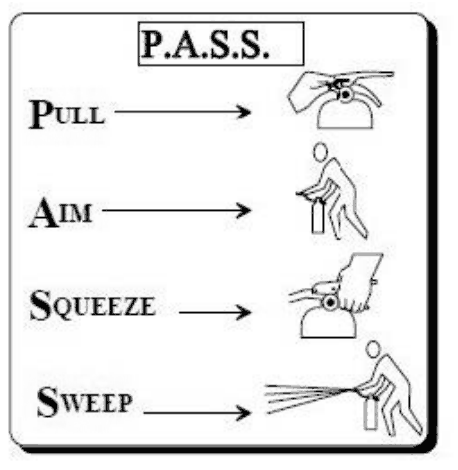
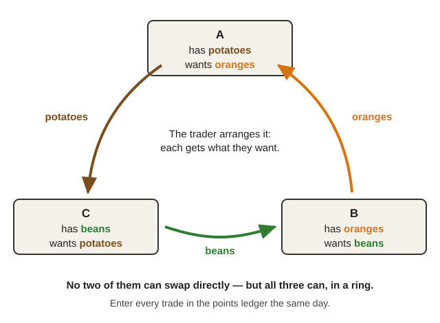
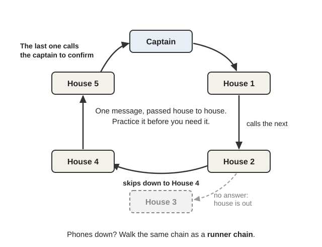
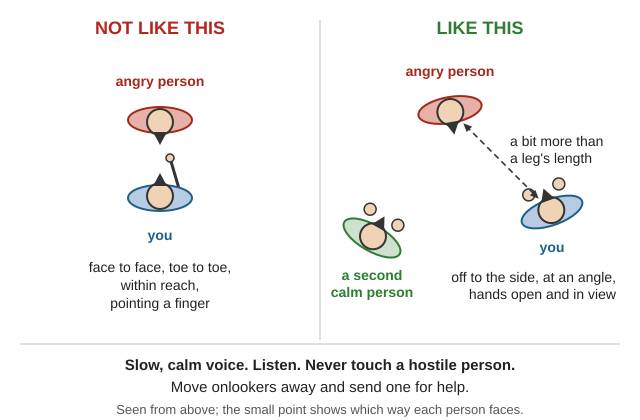

Guides › Radio, community & protection · Emergency · Index A–Z
How neighbors look after each other when no government, police or stores are coming: forming a neighborhood group, running meetings and making fair decisions, knowing who has what skills and tools, sharing work, trading fairly and keeping records, keeping watch, calming angry people, settling disputes and theft without violence, and looking after people's minds through grief and long hard months. The books are in Southern-Oregon\Community-Barter\ (Organizing-Neighbors, Barter-Trade, Watch-Conflict, Wellbeing); the Map Your Neighborhood plan and its OK/HELP card are in Southern-Oregon\Comms-Signals\Messaging-Plans.
⚠️ Rules that keep a group safe, fair and together
- Rescuer safety comes first, and nobody goes alone — always teams of at least two. In the 1985 Mexico City earthquake untrained volunteers saved 700 lives, but about 100 of them died (CERT manual, pp. 2, 58).
- Watchers watch and report. They don't confront, chase or carry weapons on patrol (Neighborhood Watch Manual, p. 20).
- No punishment by force. Physical force is "never recommended" except to stop an injury (De-escalation slides, p. 4). Beatings and armed posses are crimes and start feuds that outlast the emergency (rule of thumb).
- Help is voluntary. Pool work by agreement — never force people to work (a 1918 booklet on the drive says otherwise; see Old advice at the end).
- Never announce who is away or what the group has stored (Watch Manual, p. 21).
- Write it down — trades, stores and incidents (Braun, p. 19; De-escalation, p. 23).
Keep it small. Map Your Neighborhood (MYN) uses 15–25 homes, ideally ones within sight of each other — any more can't all be checked in the "golden 60 minutes" after a disaster. In the country, include as many homes as you can check in an hour or two (MYN, pp. 3, 19).
Invite people in person (a flyer on the porch doesn't bring them out), ask one or two neighbors to help, and meet in someone's home — attendance drops at a school or church (p. 19).
The 9 steps after a disaster (MYN, pp. 14–16; rural changes from MYN Rural, p. 3):
| Step | At home first (1–6), then together (7–9) |
|---|---|
| 1 | Care for your own family. |
| 2 | Protect head, hands and feet: hard hat or bike helmet, sturdy shoes, leather gloves — kept under the bed (p. 6). |
| 3 | Smell or hear gas? Shut off the propane (MYN, p. 22; Propane). Propane is heavier than air and settles in low spots. |
| 4 | Shut the house water valve (what it may look like). On a well, this keeps the water heater and pipes from draining back out. |
| 5 | Post your OK/HELP card where it can be seen (card). |
| 6 | Town: put the fire extinguisher (how to use one) at the road edge. Rural: homes are too far apart — keep it at home. |
| 7 | Go to the gathering site. |
| 8 | Form four teams of at least two: one listens to the radio; one checks the neighbors flagged as needing help; one checks every propane tank and gas meter on the map; one goes door to door, starting with HELP cards and homes with no card. |
| 9 | Every team reports back so everyone knows what's done. |

Using the extinguisher: pull the pin, aim at the base of the fire, squeeze the handle, sweep side to side (CERT, p. 172).Rural communication site: pick a known, central spot — a mailbox cluster, a crossroads, or a home or barn near the middle. Each household tapes its OK/HELP card there with name, date and time. Anyone who can help writes what they'll do and when, then reports back (MYN Rural, pp. 1–2).
Organize like a CERT team (CERT, pp. 58, 61; organization chart):
📚 Go deeper: MYN Discussion Guide — a script for the 90-minute first meeting; MYN Rural Settings — wells, propane and the mailbox site; FEMA CERT Basic Training — teams, fire, light search and rescue, disaster medicine.
Small group: "friendly, serious, courteous discussion is preferable to formal parliamentary procedure" (Braun 1933, p. 13).
A bigger meeting (Robert's Rules, 1915, pp. 281–282, 291):
Simple rules of order (Robert's Rules, pp. 32, 286):
Before founding anything permanent, make sure a majority agrees with the plan — groups that skipped this "have found themselves in the minority" (p. 290).
Choosing what to do first: list the problems and rank them, then rank again asking "Which can we do with our own resources?" and "Which will benefit the most people?" (Peace Corps PACA, p. 116). Robert's Rules of Order.
📚 Go deeper: Robert's Rules of Order (1915) — Part II: calling a mass meeting and founding a society; Peace Corps PACA — tools for a whole community to choose priorities.
Skills and equipment inventory (MYN, p. 11): go down a list and write who can do what and who has what (a blank inventory form). Every household keeps its own copy, in case it's the only one home. Oregon's own quake guide says the same (Living on Shaky Ground, p. 14).
| Skills to ask about (examples) | Tools to ask about (examples) |
|---|---|
| First aid, nursing, childbirth, child and elder care | Chainsaws, crosscut saws, axes, wedges |
| Carpentry, plumbing, wells and pumps, wiring | Generators, solar panels, batteries |
| Mechanics, small engines, welding, blacksmithing | Ham, GMRS and FRS radios |
| Gardening, livestock, butchering, canning | Pressure canners, grain mills, carts, trailers |
| Hunting, fishing, foraging, tanning | Water tanks, hand pumps, filters |
| Teaching, counseling, mediation, record-keeping | Tractors, horses, harness |
Contact list and map (MYN, pp. 12–13): number each house on the map and write down who lives there. Mark who will need extra help — older people, people with disabilities, children who may be home alone. It's kept confidential, and anyone may decline to share. Pick a Neighborhood Care Center for frightened or frail neighbors — a house with few steps (p. 10). No paper? Draw the map with sticks and stones in the dirt (PACA, p. 88; a sample community map).
Seasonal calendar: chart when work peaks, when food runs short (the "hungry season") and when people are free (PACA, p. 105; an example). In the Valley: wet winters November–March, fire and smoke season roughly June–October (the state sets the dates each year), harvest August–October (general practice).
📚 Go deeper: MYN Discussion Guide, p. 11 — running the inventory, contact list and map; Peace Corps PACA — community maps, seasonal calendars, daily schedules.
📚 Go deeper: USDA The Farm Labor Problem (1918) — pooling crews for planting and haying (use its methods, not its 1918 coercion); FEMA HS-4 — daily routine and duty rosters in a shelter.
What trades well (Barter): a good that many people need, that lasts, is cheap to store, divides into small amounts and is easy to carry (Menger 1892, pp. 30–31). Such goods naturally become money (p. 36; Commodity money). Plain barter fails when A wants what B has, B wants what C has, and C wants what A has (p. 21). Coincidence of wants.
Setting up a barter group (Braun 1933, pp. 13–15): a few people first survey what the community needs and has to trade; present it at a meeting; elect a steering committee; choose a trading place; write a membership agreement. Start small, "with people you know." Members meet weekly on practical trading business only — don't leave everything to one manager.
The trader should be trustworthy, "a natural trader but not a sharp, hard bargain driver," and should arrange three-way trades: A has potatoes and wants oranges, B has oranges and wants beans, C has beans and wants potatoes (p. 15).

Braun's three-way trade: no two of them can swap directly, but passed round the ring each gets what they want (a diagram drawn for this guide).Fair exchange — the points ledger (p. 19):
| Date | Member | What | + points | − points | Balance |
|---|---|---|---|---|---|
| Mar 3 | House 4 | 4 hours splitting wood for House 9 | 400 | 400 | |
| Mar 5 | House 4 | Squash and potatoes from the trading post | 150 | 250 |
(Example only.)
Rules that kept barter groups healthy (pp. 17, 21): put off paper scrip as long as possible; refuse junk; admit new members fully only after they show they cooperate; and nobody can take more from the group than they put in.
Shared credit and local notes (Cleveland Fed, pp. 1–3): Ithaca Hours were pegged to one hour of local labor. In a LETS shared-credit system everyone starts at zero and all balances add up to zero — so cap how far into debt any account can go. Any currency is "only as good as its spendability." LETS, Time-based currency.
Avoiding disputes (rule of thumb): agree on amount (scales) and quality before anything changes hands; have a witness for big trades; enter it in both books the same day; bring complaints to the weekly meeting, not to the street.
📚 Go deeper: Braun Barter Associations in California (1933) — a whole Depression-era barter group in question-and-answer form; Cleveland Fed Private Money — labor-hour notes and LETS in four pages; Menger On the Origins of Money — why some goods become money.
Structure (Watch Manual, pp. 10–11):

Each house calls the next, skips anyone who's out, and the last one calls the captain to confirm (a diagram drawn for this guide).Patrol rules (p. 20): watch members "do not possess police powers and they shall not carry weapons or pursue." They "should never confront suspicious persons." Carry flashlights and radios that report to a staffed base. Walk in pairs, observe, report — don't intervene (general practice).
Describing what you saw (p. 24): note what can't be changed — height, build, skin and eye color, scars, tattoos. Clothes can change. Write it down at once, even on your hand. Never hesitate to say "I'm not sure."
Night watch: keep watch-standers on a consistent schedule rather than switching shifts, and protect their daytime sleep — sentry duty is among the jobs most damaged by sleepiness (Ship's Medicine Chest, p. 154). Use 2-hour shifts in pairs with a fixed handover, and in fire season watch for smoke and glow too (general practice).
| Shift (example) | Post | Pair | Handover |
|---|---|---|---|
| 8–10 pm | Gathering site, radio on | Houses 2 + 5 | Anything seen; who's out late |
| 10 pm–12 am | Road junction | Houses 7 + 11 | Smoke or glow? Radio check |
| 12–2 am / 2–4 am / 4–6 am | Same posts | Fixed pairs, same nights each week | Write in the log |
📚 Go deeper: Neighborhood Watch Manual — starting a watch, block captains, observing and reporting; Ship's Medicine Chest, p. 154 — sleep and night watches.
From the Kentucky de-escalation slides (pp. 15–24):

A bit more than a leg's length away, off to the side and at an angle, hands in view, with a second calm person nearby (a diagram drawn for this guide).📚 Go deeper: Using Verbal De-Escalation — 25 plain slides on stance, voice and what not to say; CERT, p. 152 — giving a disruptive person a useful job; Conflict Resolution Education Guide, p. 31 — rules for fighting fair.
Where conflict comes from: limited resources, unmet needs, or different values. Values don't have to change — first admit each side sees it differently (Conflict Resolution Guide, pp. 22–23). Giving in ("soft") or threats ("hard") don't last; only "principled" responses tend to make agreements that hold (pp. 23–24).
Four principles: separate the people from the problem; focus on interests, not positions; invent options that help both; use fair, outside standards. Six steps: set the stage, hear each side, find the interests, list options, judge the options, agree (pp. 24, 26). Fight fair: attack the problem, not the person; no put-downs; don't drag up the past (p. 31).
Mediation (FAO, p. 27): a mediator helps both sides design their own solution; an arbitrator decides for them. To find interests, keep asking "Why is this important for you?" (p. 128). Turn insults into problems: "You are selfish, the whole community suffers" becomes "consider a solution that meets your family's interests and the community's" (p. 129). Water, firewood and fence-line disputes fit this well (general practice). Mediation.
Protecting shared stores (general practice): don't advertise what you have; keep common stores in locked, rodent-proof containers with a written in-and-out log; two people to open them; rotate who guards and who counts.
When something goes missing — a fair process (rule of thumb):
📚 Go deeper: Conflict Resolution Education Guide — principled negotiation and mediation in plain English; FAO Negotiation and Mediation Techniques — disputes over land, water and wood.
Look, listen, link (WHO Psychological First Aid, p. 25): look for safety, urgent needs and people in severe distress; listen and help them feel calm; link them to practical help, information and loved ones.
To the grieving, never say "It could be worse," "Everything happens for the best," or to a child, "You're the man of the house now" (PFA Field Guide, p. 41).
Look after the helpers (self-care toolkit): work in pairs (WHO, p. 50); watch for helpers taking on survivors' feelings and burning out — time away helps (CERT, p. 144); sleep, exercise, eat, and balance work, play and rest (p. 146).
Over months: expect a "disillusionment" low in the second half of the first year and again around the anniversary (CERT, p. 151). Counter it with scheduled good activities, problem-solving and helpful thinking (Skills for Psychological Recovery, p. 49), deliberately rebuilding friendships (p. 65), and regular support-group meetings (Where Women Have No Doctor, p. 14). Psychological first aid.
📚 Go deeper: WHO Psychological First Aid — a short field guide; PFA Field Operations Guide — children, grief and handouts; Skills for Psychological Recovery — worksheets for the months after.
Schooling with no school: older children tutor younger ones (peer tutoring) (Peer Tutoring, pp. 17–21). Structured tutoring beats casual help; short focused stretches (up to 4 weeks) work best; math, then reading, show the biggest gains. Train tutors to be kind — untrained tutors drift into threats and put-downs (p. 21). The tutors gain skill and confidence too. For family talk and journaling, use the day-by-day prompts in the Oregon toolkit. One-room school.
📚 Go deeper: Red Cross Disaster Preparedness for Seniors by Seniors — written by elders after a two-week outage; NWREL Peer Tutoring — teaching mixed ages with few adults.
📚 Go deeper: MYN Rural Settings — the rural plan; Red Cross Seniors — building a support network before you need it.
| Old book | What it says | Do this instead |
|---|---|---|
| USDA Circular 112 (1918), pp. 6, 11 | Enforce vagrancy laws against "idlers and loafers"; fixed men's and women's farm roles | Keep it voluntary. Use only its labor-pooling ideas; anyone can do any job they're able to |
| Braun (1933) | 1933 California law on workers' comp, scrip and truck permits | Obsolete — use only its trading methods |
| MYN Rural, p. 1 | $20 walkie-talkies reach "about 15 miles" | Badly overstated — expect 1–2 miles in our hills (general practice) |
| MYN, p. 7 | Only the gas company may turn gas back on | With no gas company, a competent person relights propane appliances only after a soapy-water leak check — never a flame (general practice); see the Fuel guide |
| Watch Manual, Red Cross and PFA guides | Call 911, police and referral services | Report to your group's base and leaders — but keep "no weapons, never confront" exactly as written |
| De-escalation slides, p. 11 | "80–90% of communication is non-verbal" | A popular overstatement; the advice itself is sound |
| Menger, pp. 8–10 | 2009 foreword on central banks | Modern opinion — read the 1892 essay itself |
| Robert's Rules (1915) | Old edition, "he" for every member | Fine for the basics |
📚 Go deeper: USDA Circular 112, p. 11 — the 1918 coercion, to recognize and avoid; Neighborhood Watch Manual, p. 20 — the patrol rules to keep exactly as written.
Look before you try it. 🖼️ = drawings in the books on this drive; 📷 = photos in the offline Wikipedia.
Getting organized after a disaster
Maps, lists and calendars
Fair trade
Watch, work and wellbeing